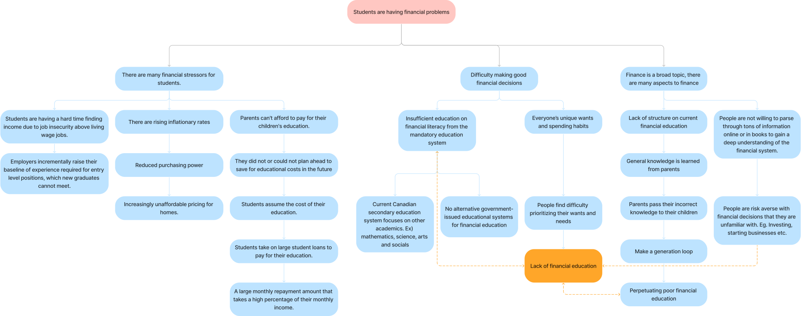
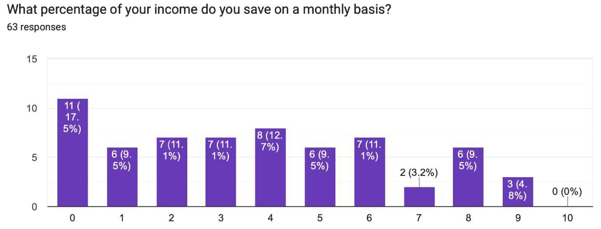
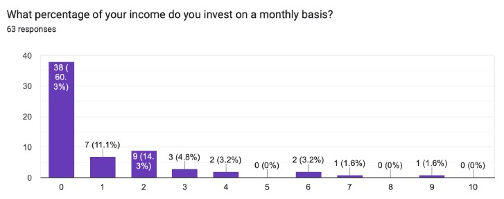
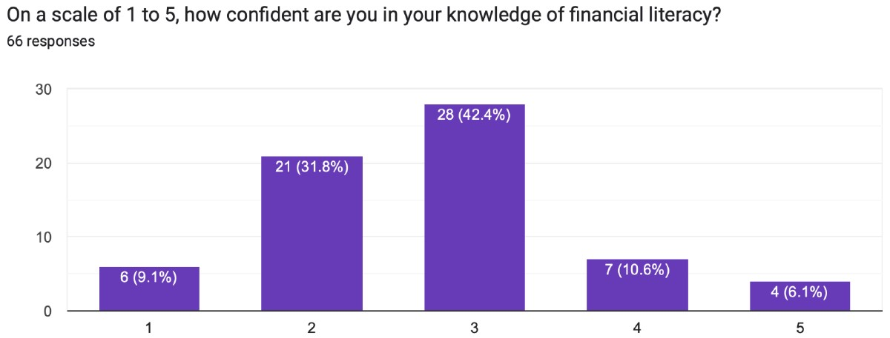
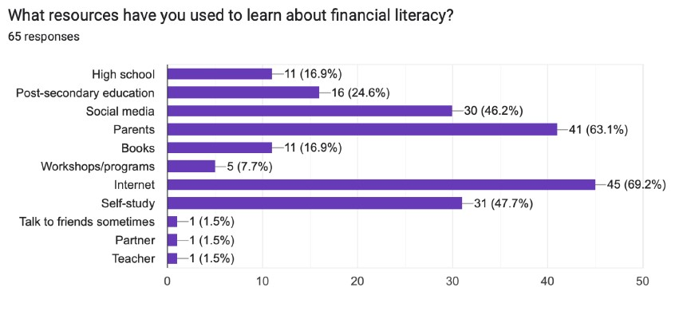
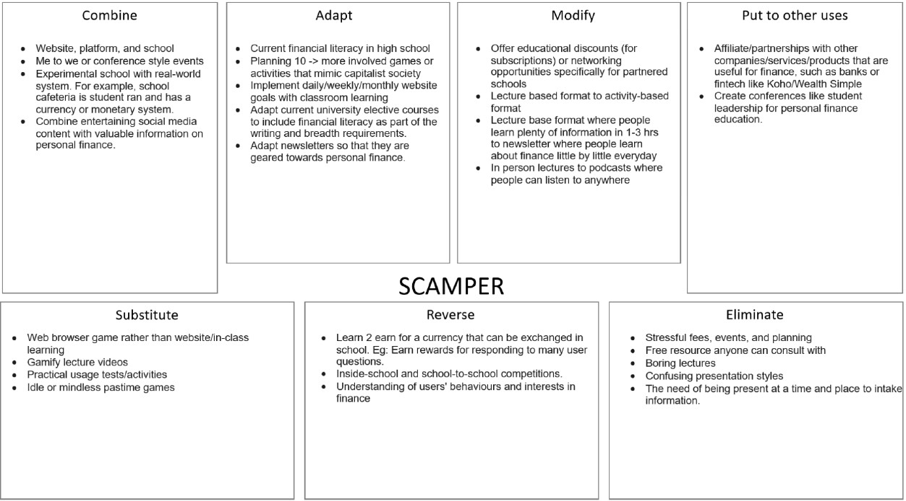
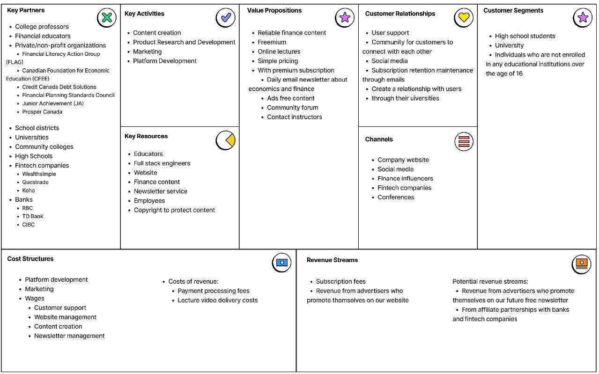
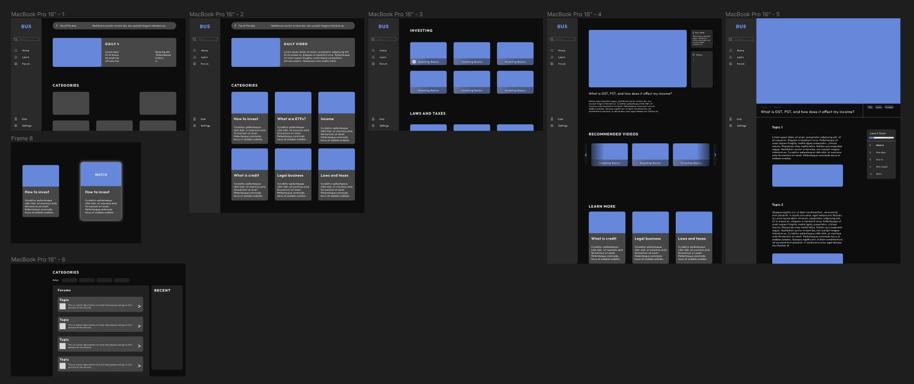

Project Background
We first selected our topic problem: Students are having financial problems. An issue
that our entire team could understand and empathise with. To begin tackling the problem, we started with
secondary research to understand the topic, associated issues, and possible root causes. We found that
ultimately, all of the problems could be linked to a lack of financial education.
The focus of our project is on secondary and post-secondary students. To gather a deeper understanding
of this issue, we created an anonymous survey to understand students financial situation and their
financial competency. As some questions may be sensitive, respondents could choose whether to respond or
not.

Survey
We found that most respondents were students with the majority (91%) being under 23 years of age. We
also asked about the respondents income, how much they saved, how much they invested, and their
knowledge on personal finances.

To summarise some outstanding results from the survey, we found that over 60% of respondents did not
invest and percent of their income if they were working.

80% of respondents did not remember learning
about personal finances in school. The question we wanted to know the most was what resources people
used to learn about finances.

Here, we found that most of our respondents learned about finances from
their parents, the internet, and social media platforms. 98% of respondents believed that financial
literacy education should be mandatory in school.

These results reflect the sample of respondents in our survey, and may not be the same in other
situations.
Interviews
We also conducted some interviews to gain further, more personal insight into our audience's situation.
We had some pre-planned questions to ensure that we could gather the same information from each
interviewee. During my interviews I also probed my interviewees further, asking more specific questions
in response to their answers to gain deeper insight.
From the interviews, we found that most interviewees tuition was paid for in-full or partially by their
parents. Additionally, some paid for their tution and expenses with student loans and by income from
part-time jobs.
Solution Development
After collecting and analysing our survey and interview data, we began developing possible solutions
using the SCAMPER framework. We then proposed a few of the viable ideas to our interviewees, some of
which were a podcast, and in-person events (conventions, conferences...). The interviewees favoured a
website platform for education where videos, practice questions and solutions, and community could be
integrated. Additionally, our interviewees believed that the website in combination with social media
content and newsletters could be a way to quickly expand the user base and provide short-form, easily
digestible knowledge.

All together, these solutions would help solve two major pain points. First, that there is not enough
information on personal finance catered for young Canadians. Secondly, that reliable and authoritative
information was not centralized, but rather scattered around on the internet. This meant that
interviewees who were interested in personal finance had to spend a lot of time researching to find and
verify information.
For our solution, we considered bringing in financial experts from government, national and provincial
student loan organizations, financial advisors, and professors. At the start, we would create a free
program that would teach optimal short and long term financial habits in various topics such as taxes,
investing, credit and debt, salary, renting, and more.

For a premium edition, we also thought about adding in more in-depth lecture series based around the
topics in the core curriculum, and being able to ask questions directly to the experts.
To help visualize our project, I created some mockups to show during our presentations.

Results

This was a fun project to work on. As finance is something I had recently been highly interested in, I
felt invested in developing a solution proposal and am happy with the result. Throughout the course, I
learnt new ways to look at the world, problems, and methods for how to innovate solutions. Special
thanks to our professor, Kate Dilworth and my awesome teammates!